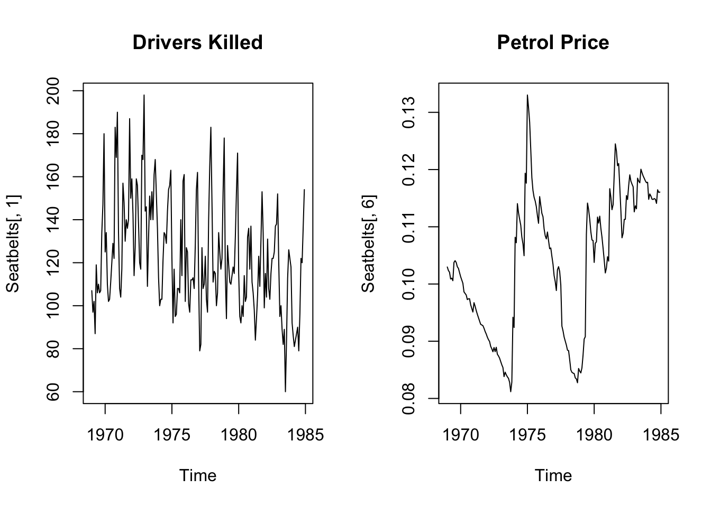
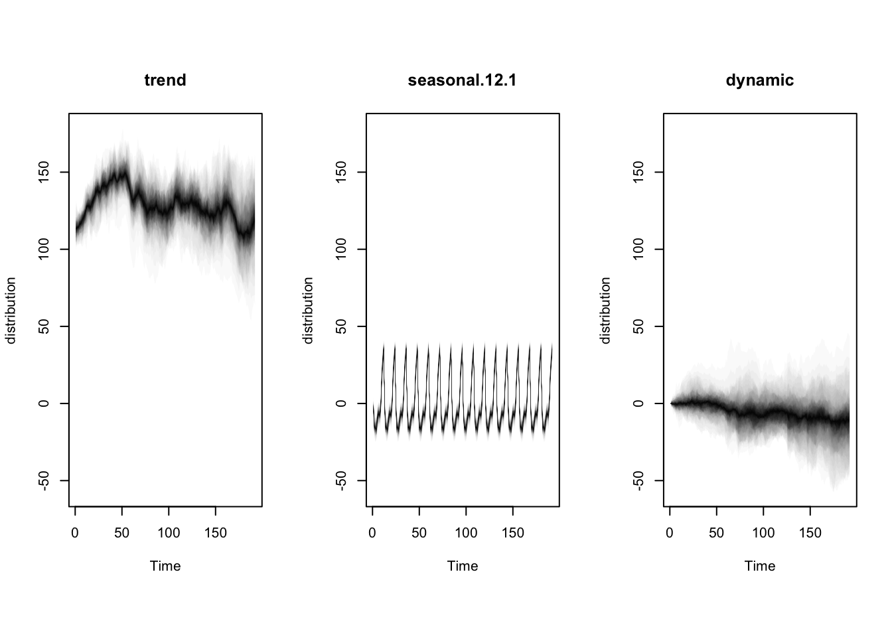

Set 7 Bayesian Inference
7.1 Bayesian logic
In the Bayesian paradigm, parameters (\(\theta\)) are random and data (\(y\)) are fixed. Inference is carried out through the posterior distribution of parameters given data.
\[p(\theta \vert y) = \frac{p(y|\theta) p(\theta)}{p(y)}\] For very simple models, we can write the analytical solution for the posterior. For example, suppose we are flipping a coin and we are interested in learning about the parameter \(\theta = P(\text{Heads})\).
Before observing any data, we believe that \(\theta\) is probably around 0.5 but we are not sure. We can encode this belief with a prior distribution whose expected value is 0.5 and ranges from 0 to 1. A good choice is the Beta distribution. In particular, we can use a Beta(\(\alpha = 2\), \(\beta = 2\)),
\[\begin{align} p(\theta) = 6\theta (1-\theta). \end{align}\]
Now we generate some data. We flip the coin (independently) 7 times and observe 5 heads. Since our data is a sequence of 0s and 1s, we can use the binomial distribution for the likelihood. That is:
\[\begin{align} p(y_1, \ldots y_7 \vert \theta) &= {7 \choose 5} \theta^5 (1-\theta)^2. \end{align}\]
Now we can multiply them together to get the posterior distribution of \(\theta\):
\[\begin{align} p(\theta \vert y) &= \frac{p(y|\theta) p(\theta)}{p(y)} \\ &= \theta^5 (1-\theta)^2 \times \theta (1-\theta) \times 6/p(y) \\ &= \theta^6 (1-\theta)^3 \times 6/p(y) \\ &= \text{Beta}(7,4) \end{align}\]

7.2 Monte Carlo Idea
Suppose we can sample from \(p(\theta \vert \text{data})\). Then we could generate,
\[\begin{align} \theta^{1},\ldots,\theta^{S} \sim p(\theta | \text{data}) \end{align}\]
and obtain Monte Carlo approximations of posterior quantities:
\[\begin{align} E(g(\theta) \vert \text{data}) \approx \frac{1}{S} \sum_{i=1}^S g(\theta^i). \end{align}\]
But what if you can’t sample from \(p(\theta \vert \text{data})\)?
7.3 Metropolis Algorithm
The metropolis algorithm proceeds as follows:
Sample \(\theta^{\star} \sim J(\theta \vert \theta^{s})\), where \(J\) is called the proposal distribution. For the Metropolis Algorithm, we assume that this distribution is symmetric.
Compute the acceptance ratio, \(r\):
\[r = \frac{p(\theta^\star \vert \text{data})}{p(\theta^{s} \vert \text{data})}\] 3 Let
\[\begin{equation} \theta^{s+1} = \begin{cases} \theta^{\star} & \text{with prob min}(r,1) \\ \theta^{s} & \text{otherwise} \end{cases} \end{equation}\]
Step 3 can be accomplished by sampling \(u \sim \text{Unif}(0,1)\) and setting \(\theta^{s+1} = \theta^\star\) if \(u < r\) and setting \(\theta^{s+1} = \theta^s\) otherwise.
7.4 Example
Let’s consider a multivariate linear regression model. That is, we will model our response variable, \(y\), as
\[\begin{align} y = X\beta + \epsilon. \end{align}\]
For simplicity, let us assume that \(\epsilon \sim N(0,1)\). Therefore, the parameter that we want to do inference on is \(\beta\). So, we want to sample from \(p(\beta \vert y)\).To do so, we need two ingredients, a likelihood function and a prior distribution for \(\beta\), \(p(\beta)\).
\[\begin{align} p(\beta \vert y) &\propto p(y \vert \beta) p(\beta) \\ &= \text{likelihood} \times \text{prior} \end{align}\]
For the linear regression model, our likelihood function can be written as,
\[\begin{align} p(y \vert \beta) = (2\pi \sigma)^{-n/2} \exp{\bigg( -\frac{1}{2 \sigma^2} (y - X \beta)^T (y - X \beta) \bigg)}. \end{align}\]
For the prior, we will assum that we know nothing about \(\beta\). So, we will use the prior distribution,
\[\begin{align} p( \beta) \propto 1. \end{align}\]
We will use the proposal distribution,
\[\begin{align} J(\theta^{\star} \vert \theta) \sim N(\theta, cI) \end{align}\].
Let us start by sampling some data that follows this model.
set.seed(1)
n = 100
X = matrix( data = c(rep(1,n), rnorm(n) ), ncol = 2)
beta_true = c(1,2)
y = rnorm(100, mean = X %*% beta_true, sd = 1)Now let’s implement the MH algorithm and sample from the posterior distribution of \(\beta\). Our MCMC output for the slope coefficient, \(\beta_1\), is summarized below.
nIter = 1e5
betas = matrix(0, nrow = nIter, ncol = 2)
beta_current = betas[1,]
p_current = exp ( -1/2 * t(y - X %*% betas[1,]) %*% (y- X %*% betas[1,] ))
for(j in 2:nIter) {
# propose a new value for betas
beta_prop = rnorm( 2, mean = betas[(j-1),], sd = .2)
# compute probability of data | beta proposed
p_prop = exp ( -1/2 * t(y - X %*% beta_prop) %*% (y- X %*% beta_prop ))
r = p_prop/p_current
if ( r > 1 ) {
beta_current = beta_prop
p_current = p_prop
} else if (runif(1) < r) {
beta_current = beta_prop
p_current = p_prop
}
betas[j, ] = beta_current
}7.5 Dynamic Regression
Let’s look at this concept at work with a dynamic regression model. We will use the Seatbelts dataset and fit a model using y=DriversKilled and x = PetrolPrice.

The model we will fit is:
\[\begin{align} y_t &= \mu_t + \beta_t x_t + \epsilon_t \\ \mu_t &= \mu_{t-1} + \eta_t \\ \beta_t &= \beta_{t-1} + \tau_t \end{align}\]
y = Seatbelts[,1] # drivers killed
x = Seatbelts[,6] # petrol price
# fit the model
ss = list()
ss = AddLocalLevel(ss, y)
ss = AddSeasonal(ss, y, nseasons = 12)
ss = AddDynamicRegression(ss, y ~ x)
dynmodel <- bsts(y,
state.specification = ss,
niter = 1000)## =-=-=-=-= Iteration 0 Tue Mar 5 15:17:27 2024 =-=-=-=-=
## =-=-=-=-= Iteration 100 Tue Mar 5 15:17:27 2024 =-=-=-=-=
## =-=-=-=-= Iteration 200 Tue Mar 5 15:17:28 2024 =-=-=-=-=
## =-=-=-=-= Iteration 300 Tue Mar 5 15:17:28 2024 =-=-=-=-=
## =-=-=-=-= Iteration 400 Tue Mar 5 15:17:28 2024 =-=-=-=-=
## =-=-=-=-= Iteration 500 Tue Mar 5 15:17:28 2024 =-=-=-=-=
## =-=-=-=-= Iteration 600 Tue Mar 5 15:17:28 2024 =-=-=-=-=
## =-=-=-=-= Iteration 700 Tue Mar 5 15:17:28 2024 =-=-=-=-=
## =-=-=-=-= Iteration 800 Tue Mar 5 15:17:29 2024 =-=-=-=-=
## =-=-=-=-= Iteration 900 Tue Mar 5 15:17:29 2024 =-=-=-=-=
A relevant question is whether this model improves performance as compared with the simpler model:
\[\begin{align} y_t &= \mu_t + \beta x_t + \epsilon_t \\ \mu_t &= \mu_{t-1} + \eta_t. \end{align}\]
To address this, we can fit the simpler model and compare the cumulative error of the two models.
ss2 = list()
ss2 = AddLocalLevel(ss2, y)
ss = AddSeasonal(ss2, y, nseasons = 12)
fixedmodel <- bsts(y ~ x,
state.specification = ss2,
niter = 1000)## =-=-=-=-= Iteration 0 Tue Mar 5 15:17:29 2024 =-=-=-=-=
## =-=-=-=-= Iteration 100 Tue Mar 5 15:17:29 2024 =-=-=-=-=
## =-=-=-=-= Iteration 200 Tue Mar 5 15:17:30 2024 =-=-=-=-=
## =-=-=-=-= Iteration 300 Tue Mar 5 15:17:30 2024 =-=-=-=-=
## =-=-=-=-= Iteration 400 Tue Mar 5 15:17:30 2024 =-=-=-=-=
## =-=-=-=-= Iteration 500 Tue Mar 5 15:17:30 2024 =-=-=-=-=
## =-=-=-=-= Iteration 600 Tue Mar 5 15:17:30 2024 =-=-=-=-=
## =-=-=-=-= Iteration 700 Tue Mar 5 15:17:30 2024 =-=-=-=-=
## =-=-=-=-= Iteration 800 Tue Mar 5 15:17:30 2024 =-=-=-=-=
## =-=-=-=-= Iteration 900 Tue Mar 5 15:17:30 2024 =-=-=-=-=7.6 Stochastic Volatility Model
A stochastic volatility model is a special case of a state space model. The simplest version is:
\[\begin{align} y_t &= \beta_0 + \beta_1 y_{t-1} + \exp(h_t/2) \epsilon_t \\ h_t &= \mu + \phi(h_{t-1} - \mu) + \sigma \eta_t \end{align}\]
where \(\epsilon \sim N(0,1)\) and \(\eta_t \sim N(0,1)\).
set.seed(1)
data("exrates")
ind = which(exrates$date >= as.Date("2011-03-01") & exrates$date <= as.Date("2012-03-01"))
CHF_price <- exrates$CHF[ind]
res_sv <- svsample(CHF_price, designmatrix = "ar1")## Done!## Summarizing posterior draws...7.7 Lab 6
- Adjust the MH algorithm in Example by including an informative prior for \(\beta\). In particular, use
\[\begin{align} p(\beta) \sim N(\mathbf{0}, \frac{1}{\lambda} I), \end{align}\]
where \(I\) is a \(2 \times 2\) identity matrix and \(\mathbf{0}\) is a vector with two elements. Use the same simulated data as in the example. Run the algorithm for three different \(\lambda\) values (10, 50, 100). For each of the three \(\lambda\) values, make a trace plot and a histogram for \(\beta_1\).
Fit a dynamic regression model to the livestock data used in Lab 5. Compare with the state space model fit in question 5 of lab 5 using
CompareBstsModels. Based on this plot, which model fits the data better?Suppose you have data that is generated from a Normal distribution. That is,
\[y_1, \ldots, y_n \sim \text{Normal}(\mu, \sigma^2)\].
You are interested in doing (Bayesian) inference on \(\mu\). You decide to use a normal prior distribution for \(\mu\),
\[p(\mu) \sim \text{Normal}(\mu_0, \tau^2)\].
The posterior distribution, \(p(\mu \vert y_1, \ldots, y_n )\) is also Normal. What are the mean and variance of the posterior distribution for \(\mu\)?